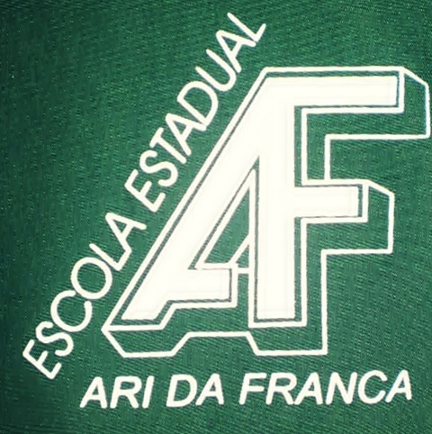
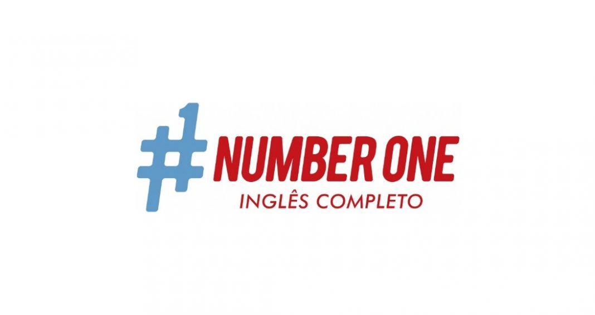

Quem sou eu?
Olá! Meu nome é Leonardo Valverde, tenho 23 anos e resolvi criar esse site para expor meu conhecimento em Front-end! Aqui você poderá ver alguns projetos meus, analisar meu currículo, entrar em contato e quem sabe no final eu não farei parte da sua equipe? Acho isso empolgante!! Então espero que você goste do meu portifólio.
Mineirinho natural de Belo Horizonte, descobri minha paixão pela tecnologia cedo, desde pequeno vivia plugado no computador tentando desvendar as várias funcionalidades que esta maravilha da invenção humana nos proporcionou. Ficava horas pensando como uma caixa retangular com um monitor ligado podia realizar tantas coisas legais, algo em mim dizia que eu precisava saber o que se passava ali dentro. Meu futuro não poderia ser diferente, era o primórdio de uma paixão que seria cultivada com muito carinho.
Ensino Médio
Vindo de escola pública agradeço todo dia por ter tido uma educação de qualidade e professores inspiradores, os quais me encorajaram em seguir meu caminho e repetiam constantemente que eu poderia ser tão bom quanto um aluno de escola privada. Sou muito grato a todos eles pois foram o ponto de partida para as minha primeiras conquistas da vida, não conseguiria ver um futuro tão promissor sem essa inspiração!
Curso de Inglês
Visando ampliar meus conhecimentos e novos estudos, não tive dúvidas quanto aprender inglês. Um fator importante que fez toda diferença em minha vida, amizades estrangeiras e acesso ao conteúdo internacional foram decisivos para o meu aprendizado, tudo isso após estudar por 5 anos na Number One Idiomas, sinto que todo o meu esforço foi recompensado.
Graduação

Para carimbar minha caminha pela TI, a graduação foi muito importante. Foi ali que vi realmente o que eu amava e como aquilo funcionava por trás dos panos, foram anos arduos porém muito prazerosos, quanto mais eu aprendia melhor eu me sentia, essa fome insaciável pelo conhecimento perpetua até hoje, por isso mesmo após a gradução viso expandir meus conhecimentos.